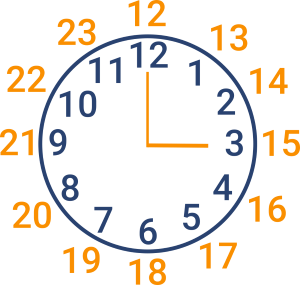

n = 1
print(f"{n:02}")01Прикладна аналітика
У 23-й серії 5-го сезону 4исла на екрані з’являється IP-адреса 275.3.6.28, яка насправді не є дійсною адресою IPv4 (або IPv6).
IPv4-адреса - це числовий ідентифікатор, який пристрій (або, на телебаченні, хакер) використовує для зв’язку в Інтернеті, подібно до поштової адреси в реальному світі, зазвичай відформатований у dot-decimal notation як #.#.#.#. Але кожна # має бути числом від 0 до 255 включно. Вже видно, що 275 не знаходиться в цьому діапазоні! Давайте допоможемо героям серіалу перевірити адресу у цій сцені!
У файлі з назвою numb3rs.py реалізуйте функцію з назвою validate, яка очікує IPv4-адресу на вході у вигляді str, а потім повертає True або False, відповідно, якщо цей ввід є дійсною IPv4-адресою чи ні.
Структуруйте numb3rs.py наступним чином, при цьому ви можете змінювати main та/або реалізовувати інші функції на свій розсуд, але ви не можете імпортувати інші бібліотеки. Ви можете, але не зобов’язані використовувати re та/або sys.
import re
import sys
def main():
print(validate(input("IPv4 Address: ")))
def validate(ip):
...
...
if __name__ == "__main__":
main()До або після того, як ви реалізуєте validate в numb3rs.py, додатково реалізуйте у файлі з назвою test_numb3rs.py дві або більше функцій, які ретельно тестують вашу реалізацію validate, кожна з яких повинна починатися з test_, щоб ви могли виконати ваші тести з ними:
pytest test_numb3rs.pyre постачається з багатьма функціями включаючи з search.\n), для шаблонів регулярних виразів краще використовувати сирі позначення рядків у Python, інакше pytest видасть попередження DeprecationWarning: invalid escape sequence. Так само, як форматовані рядки мають префікс f, так і сирі рядки мають префікс r. Наприклад, замість "knu\.edu", використовуйте r"knu\.edu".re.search передано шаблон з “групами” (тобто дужками), повертає match object, де збіги мають 1-індекс, до якого ви можете отримати доступ індивідуально за допомогою group або цілу групу за допомогою groups.
Більшість відео з YouTube можна вбудовувати в інші веб-сайти, так само, як це було у першому завданні. Наприклад, якщо ви перейдете за посиланням, натиснете “Поділитися”, а потім “Вбудувати”, ви побачите HTML-код (мова, якою написані веб-сторінки), як показано нижче, який ви можете скопіювати у вихідний код вашого веб-сайту, де iframe - це “елемент” HTML, а src - один з декількох “атрибутів” HTML, значенням якого є https://www.youtube.com/embed/w0drLyhnByk.
<iframe width="560" height="315" src="https://www.youtube.com/embed/w0drLyhnByk" title="YouTube video player" frameborder="0" allow="accelerometer; autoplay; clipboard-write; encrypted-media; gyroscope; picture-in-picture; web-share" allowfullscreen></iframe>Оскільки деякі атрибути HTML є необов’язковими, ви можете мінімально використати лише наступні:
<iframe src="https://www.youtube.com/embed/w0drLyhnByk"></iframe>Припустимо, що ви хочете витягти URL-адреси відео на YouTube, вбудовані у сторінки (наприклад, https://www.youtube.com/embed/w0drLyhnByk), перетворивши їх назад у коротші URL-адреси youtu.be (наприклад, https://youtu.be/w0drLyhnByk), за якими їх можна буде переглянути на самому YouTube.
У файлі watch.py реалізуйте функцію parse, яка очікує на вхідний str HTML, витягує будь-яку URL-адресу YouTube, що відповідає значенню атрибуту src елемента iframe, і повертає його коротший еквівалент на youtu.be у вигляді рядка. Очікується, що будь-яка така URL-адреса буде в одному з наведених нижче форматів. Вважайте, що значення src буде взято у подвійні лапки. І припустимо, що вхідні дані містять не більше однієї такої URL-адреси. Якщо вхідні дані не містять жодної такої URL-адреси, виведіть None.
http://youtube.com/embed/w0drLyhnBykhttps://youtube.com/embed/w0drLyhnBykhttps://www.youtube.com/embed/w0drLyhnBykСтруктуруйте watch.py наступним чином, при цьому ви можете змінювати main та/або реалізовувати інші функції на свій розсуд, але ви не можете імпортувати інші бібліотеки. Ви можете, але не зобов’язані використовувати re та/або sys:
import re
import sys
def main():
print(parse(input("HTML: ")))
def parse(s):
...
...
if __name__ == "__main__":
main()* і + є “жадібними”, оскільки “вони зіставляють якомога більше тексту”. Додавання ? одразу після *? або +? “робить пошук не жадібним або мінімальним; буде знайдено якомога менше символів”.
У той час як більшість країн використовують 24-годинний формат часу , Сполучені Штати, як правило, використовують 12-годинний формат часу.
Відповідно, замість “з 09:00 до 17:00” багато американців скажуть, що працюють “9:00 AM до 5:00 PM” (або “9 AM до 5 PM”), де “AM” - це скорочення від “ante meridiem”, а “PM” - це скорочення від “post meridiem”, де “meridiem” означає полудень (тобто, полудень).
Так само, як “12:00 AM” у 12-годинному форматі буде “00:00” у 24-годинному форматі, так і “12:01 AM” до “12:59 AM” буде “00:01” до “00:59” відповідно.
| 12-годин | 24-годин |
|---|---|
| 12:00 AM | 00:00 |
| 1:00 AM | 01:00 |
| 2:00 AM | 02:00 |
| 3:00 AM | 03:00 |
| 4:00 AM | 04:00 |
| 5:00 AM | 05:00 |
| 6:00 AM | 06:00 |
| 7:00 AM | 07:00 |
| 8:00 AM | 08:00 |
| 9:00 AM | 09:00 |
| 10:00 AM | 10:00 |
| 11:00 AM | 11:00 |
| 12:00 PM | 12:00 |
| 1:00 PM | 13:00 |
| 2:00 PM | 14:00 |
| 3:00 PM | 15:00 |
| 4:00 PM | 16:00 |
| 5:00 PM | 17:00 |
| 6:00 PM | 18:00 |
| 7:00 PM | 19:00 |
| 8:00 PM | 20:00 |
| 9:00 PM | 21:00 |
| 10:00 PM | 22:00 |
| 11:00 PM | 23:00 |
| 12:00 AM | 00:00 |
У файлі working.py реалізуйте функцію convert, яка отримує str у будь-якому з 12-годинних форматів, наведених нижче, і повертає відповідний str у 24-годинному форматі (тобто, з 9:00 to 17:00). Очікується, що AM і PM будуть написані великими літерами (без крапок), а перед кожним з них буде пробіл.
9:00 AM to 5:00 PM9 AM to 5 PMВикличіть ValueError, якщо вхідні дані для convert не містять жодного з цих форматів або якщо час є недійсним (наприклад, 12:60 AM, 13:00 PM, тощо).
Врахуйте, що не обов’язково робочий день починається AM і закінчується PM; хтось може працювати допізна і навіть довше (наприклад, з 5:00 PM to 9:00 AM).
Структуруйте working.py наступним чином, ви можете main та/або реалізовувати інші функції на свій розсуд, але ви не можете імпортувати будь-які інші бібліотеки. Ви можете, але не зобов’язані використовувати re та/або sys:
import re
import sys
def main():
print(convert(input("Hours: ")))
def convert(s):
...
...
if __name__ == "__main__":
main()int з початковими нулями за допомогою коду на зразокn = 1
print(f"{n:02}")01де, якщо n є однозначним числом, до нього буде додано один 0.
В англійській мові не рідкість сказати “um” (на кшталт українського “еее”), коли намагаєшся придумати слово. Однак, чим більше ви це робите, тим помітніше це стає!
У файлі um.py реалізуйте функцію count, яка приймає на вхід рядок тексту як str і повертає як int, яка рахує кількість разів “um” у тексті, незалежно від регістру, як окреме слово, а не як частина якогось іншого слова.
Наприклад, для тексту типу hello, um, world, функція має повернути 1. Однак, для тексту типу yummy, функція повинна повернути 0.
Структуруйте um.py наступним чином, ви можете змінювати main та/або реалізовувати інші функції на власний розсуд, але ви не можете імпортувати інші бібліотеки. Ви можете, але не зобов’язані використовувати re та/або sys:
import re
import sys
def main():
print(count(input("Text: ")))
def count(s):
...
...
if __name__ == "__main__":
main()При створенні Google форм, яка пропонує користувачам ввести коротку відповідь (або абзац), можна увімкнути перевірку відповіді і вимагати, щоб дані, введені користувачем, відповідали регулярному виразу.
Наприклад, ви можете вимагати, щоб користувач ввів адресу електронної пошти з регулярним виразом на зразок цього:
^[a-zA-Z0-9.!#$%&'*+\/=?^_`{|}~-]+@[a-zA-Z0-9](?:[a-zA-Z0-9-]{0,61}[a-zA-Z0-9])?(?:\.[a-zA-Z0-9](?:[a-zA-Z0-9-]{0,61}[a-zA-Z0-9])?)*$Або ж ви можете скористатися вбудованою підтримкою Google для перевірки адреси електронної пошти, як показано на скріншоті нижче, подібно до того, як ви можете використовувати бібліотеку у вашому власному коді:

У файлі response.py, використовуючи validator-collection або validators з PyPI, реалізуйте програму, яка запрошує користувача ввести адресу електронної пошти, а потім друкує Valid або Invalid, відповідно, якщо введена адреса є синтетично дійсною.
Ви не можете використовувати re і перевіряти, чи існує доменне ім’я адреси електронної пошти насправді.
Terminal
pip install validator-collectionTerminal
pip install validators